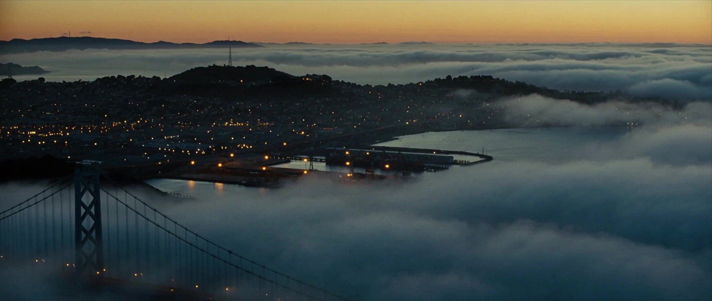
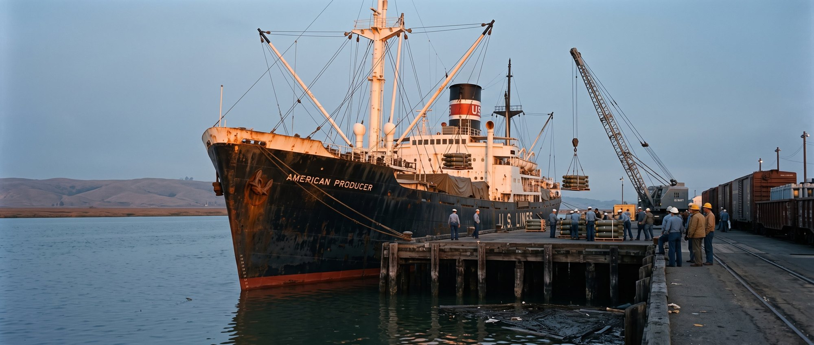
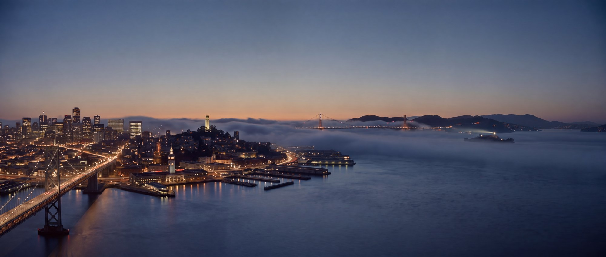
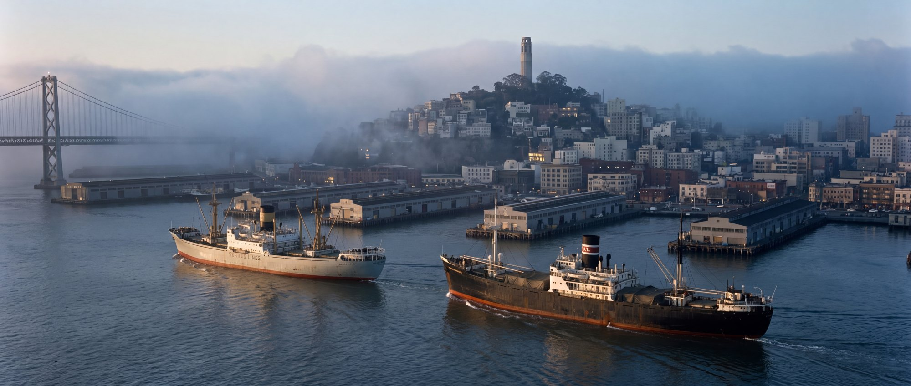
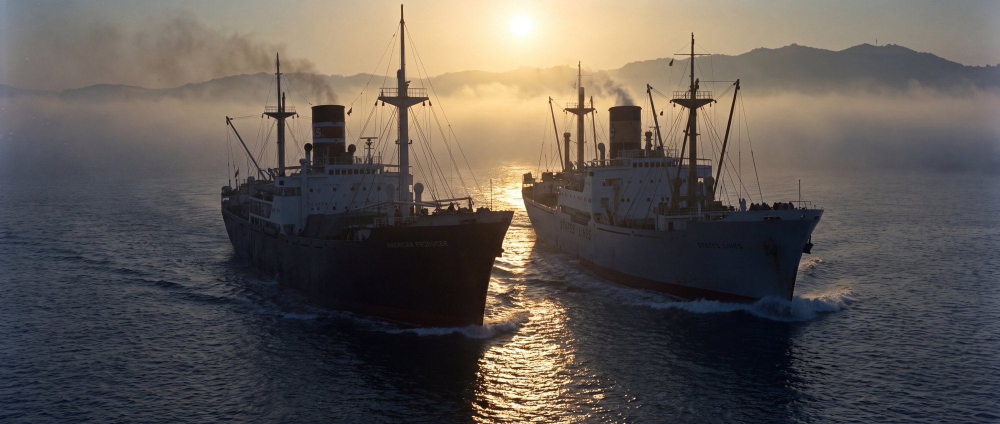
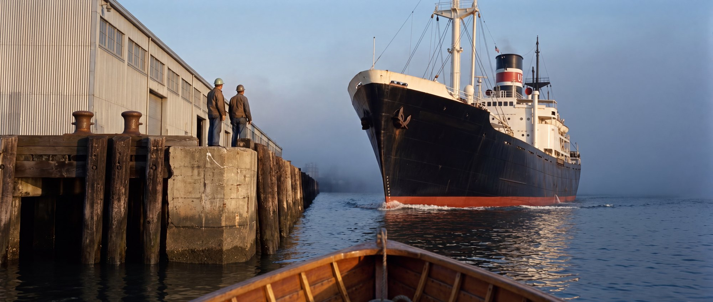
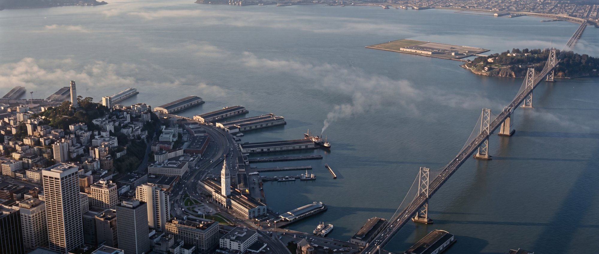
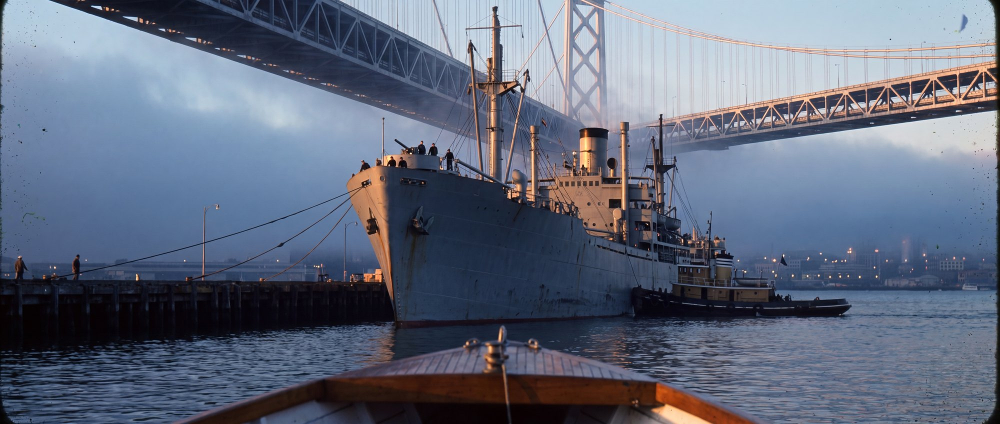
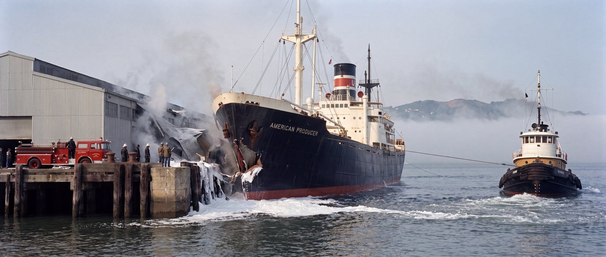

Unchanged. Card enlarged; now reads "March 5, 1969".

Unchanged.

From the Yerba Buena end of the west span at civil dawn. The shot pans right across this: Coit Tower → Golden Gate → Alcatraz → Angel Island → the open water where she came from. Built from the 1963/1966/1970 photographs; Transamerica Pyramid removed.

Behind and above both ships looking south-west. Producer foreground right, the M M Dant on her port side overtaking, Telegraph Hill and the piers ahead, Bay Bridge far left. Sunrise from behind the camera.

Opening frame of the drone move: low off the pier ends, both ships bow-on against the sunrise, Producer left, Dant right. The drone then climbs over them and turns to face the pier.

From a boat off the pier side, looking along the outer end. Intact ship, intact pier, two dockworkers for scale. The pier corner then cuts fifty feet into her port bow.

High aerial framed like the hazard chart: piers centre, Ferry Building lower left, Bay Bridge out to Treasure Island. The blast rings are drawn over this in the film.

Your father's ship, docking just west of the Bay Bridge, crew at the rail. Built from the Navy's photograph of the Manderson Victory.

The foamed dock, the pumper, the pier still in her bow, and the tug on the line pulling her off.